This group project was created for the national competition Techcomfest 2025. "Selaras" is a mental health application, offering a safe digital space for users
to express emotions and enhance well-being. Featuring self-journaling, emotion tracking, AI conversations, professional consultations, and lifestyle tracking, the app
empowers users to adopt healthier routines in a judgment-free environment.
Role : UI/UX Designer Tech Stack : Figma, Canva, Maze
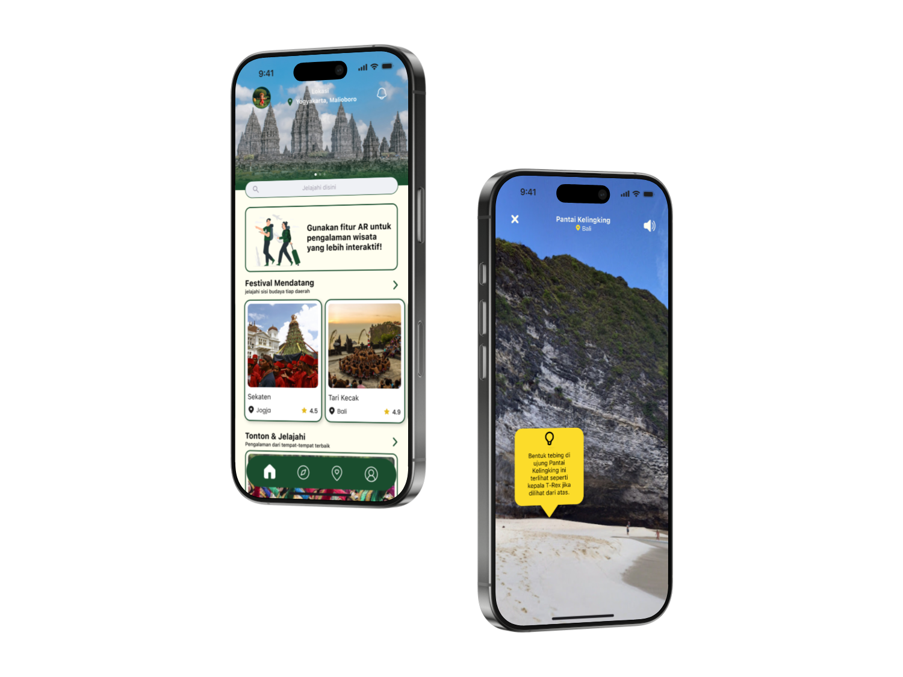
Jelajah (2024)
This group project was created for the national competition Technotainment 2024, and successfully reached the finals.
"Jelajah" is an application designed to preserve Indonesia's rich cultural heritage by allowing users to explore numerous cultural tourism destinations.
With Augmented Reality (AR), the app enhances the user experience, offering immersive cultural exploration.
Role : UI/UX Designer Tech Stack : Figma, Canva
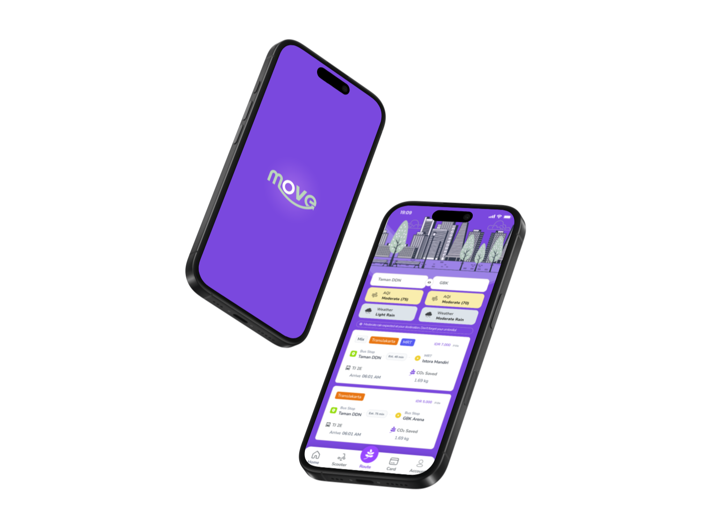
Move (2024)
This group project was created for the international competition VWO 2024, and successfully won Best Mobile App Design.
"MOVE" aims to revolutionize urban transportation by enabling journey planning across public transport modes, carbon emissions tracking,
electric scooter rentals, electronic card integration, and real-time air quality and weather updates.
Role : UI/UX Designer Tech Stack : Figma, Canva, Maze
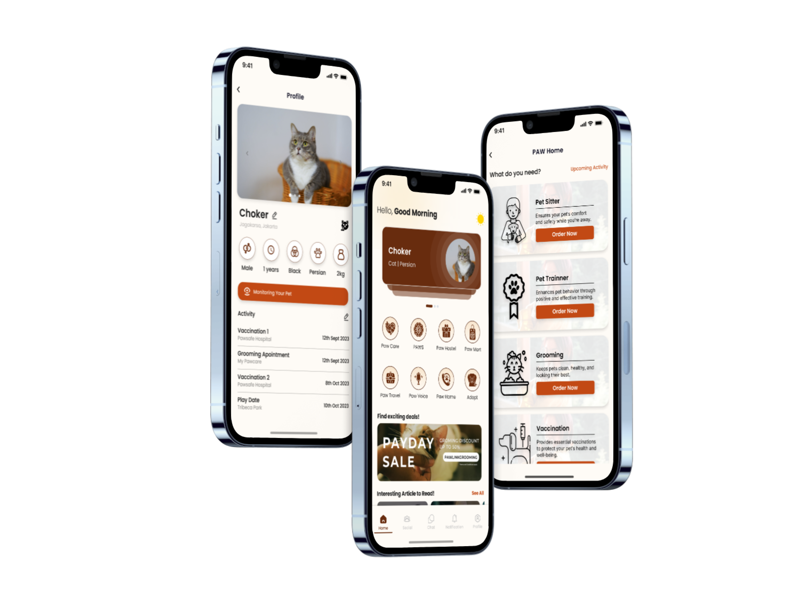
Paw Link (2024)
This group project was created for the national competition INSPACE 2024. "Paw Link" is a pet connectivity and monitoring app
integrated with a pet collar. The goal of this application is to help users better understand and meet the needs of their pets through an intuitive
UI and engaging features, combined with technologies such as IoT (Internet of Things) and AI (Artificial Intelligence).
Role : UI/UX Designer Tech Stack : Figma
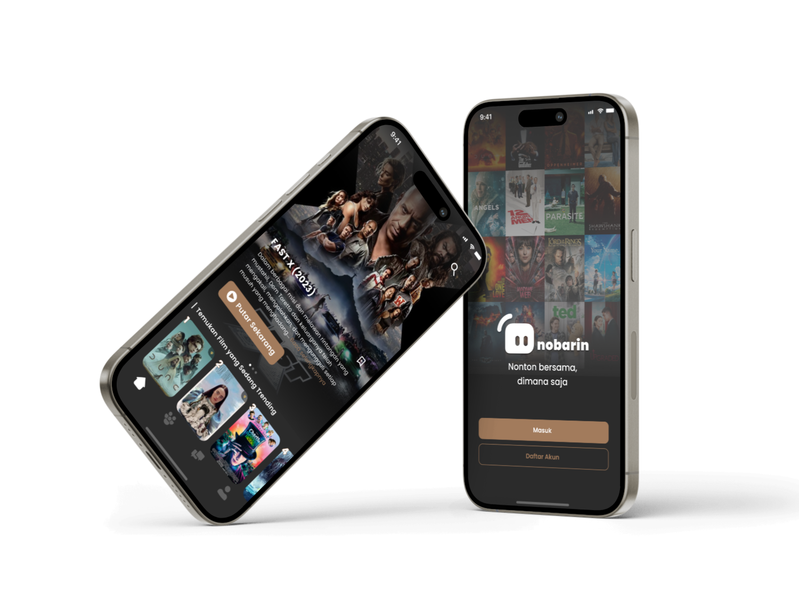
Nobarin (2024)
This group project was created for the national competition Mobile UI/UX Competition (MUC) 2024, and successfully won 2nd place.
"Nobarin" is a VOD-based application equipped with various features to enhance the user experience. The goal of this application is to provide a movie-watching platform that is easy to
access and manage, affordable, and legal. Role : UI/UX Designer Tech Stack : Figma, Canva
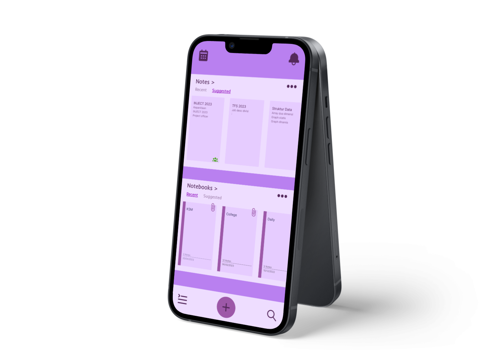
Notes (2023)
This group project was created as the final project for the UI/UX Basic Study Club of KSM Android.
The idea for this application came from many friends who were struggling to manage their tasks. "Notes" is an application that functions like a book, binder, or daily planner.
The goal of this application is to help users organize various tasks (make notes, schedule activities, track progress) so that nothing is missed. Role : UX Researcher Tech Stack : Figma, Canva, Draw.io
Data and System Analyst
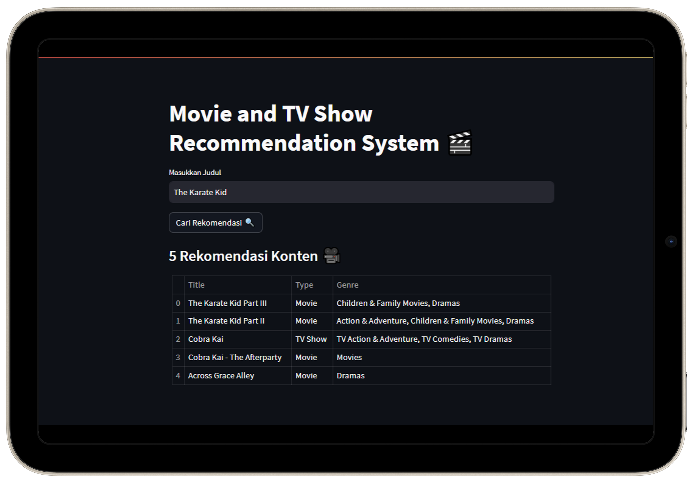
Movie and TV Show System Recommendations (2024)
This group project was created as the final project for the Data Science Beginner study club. The recommendation system
was developed using a content-based filtering approach with data sourced from Kaggle. Through data cleaning, visual exploration, and modeling
using TF-IDF Vectorizer and Cosine Similarity, the system achieved an accuracy of up to 80%. The final product was deployed via Streamlit,
enabling users to interact with the system in finding relevant movie and TV show recommendations based on their preferences.
Role : Data Scientist Tech Stack : Google Colab, Python, Anaconda, Github, Streamlit
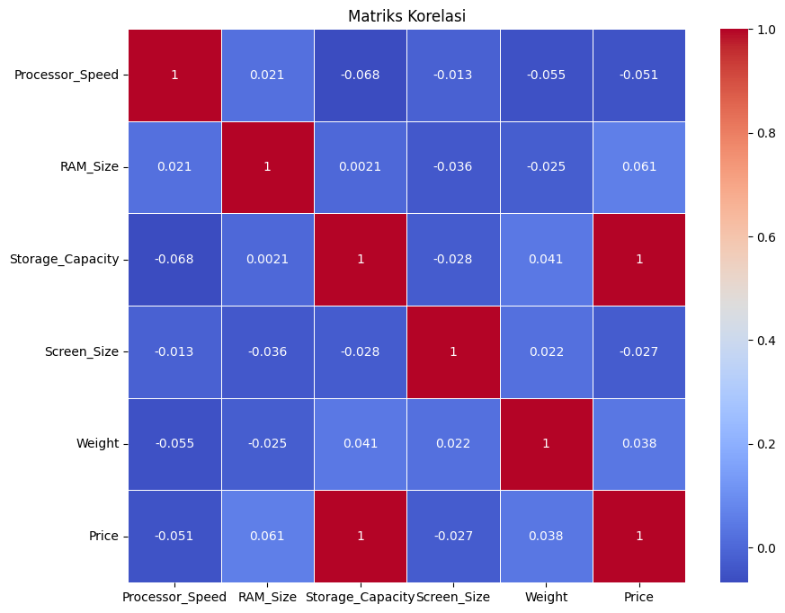
Laptop Price Prediction (2024)
This project focuses on predicting laptop prices based on key specifications such as brand, processor type,
RAM capacity, screen size, and storage. The goal was to build a predictive model for PT. ABC to better understand the factors
influencing their laptop pricing and optimize decision-making. The dataset was sourced from Kaggle, and two models were evaluated:
Linear Regression and Decision Tree. The result shows that linear regression effectively captures the relationship between laptop
specifications and pricing with minimal error and provides a better fit compared to the decision tree.
Role : Data Scientist Tech Stack : Google Colab, Python
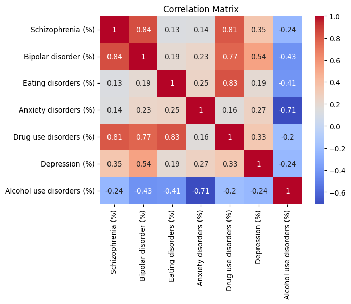
Analysis of Mental Health Disorder (2024)
This project was created as the final project for the Data Science Basic study club. The analysis uses The Devastator dataset from Kaggle. The analysis process
starts with data preparation, followed by EDA (Exploratory Data Analysis), data preprocessing, data processing, data modeling, and evaluation. The goal of this analysis is to
identify and understand mental health trends in Southeast Asia and to identify correlations between various mental disorders using linear regression models and Pearson correlation.
Role : Data Scientist Tech Stack : Google Colab, Python
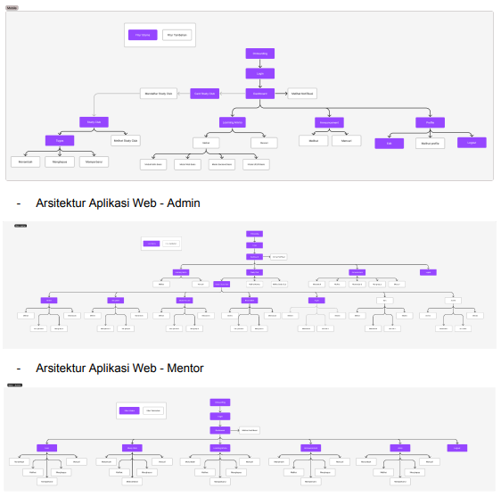
LMS "Dignition" for KSM Android (2023)
This group project is an internal development project by KSM Android. We developed a Learning Management System (LMS) to be used by the
Study Club KSM Android. As system analysts, we took several steps to ensure the system meets the users' needs. These steps included conducting interviews,
creating information architecture, narratives, activity diagram, sequence diagrams, and an ERD.
Role : System Analyst Tech Stack : Spreadsheet, Draw.io, Figma
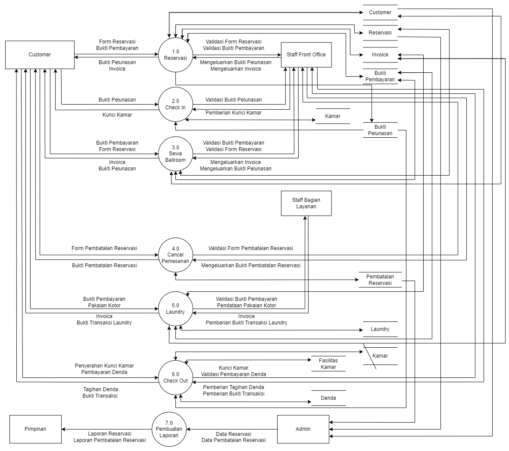
Analysis and Design of “Grand Moon Hotel” Information System (2023)
This group project was created as the final project for the Analysis and Design of Information Systems course. We designed an information system
for "Grand Moon Hotel" (a fictitious hotel name). The design process began with, analyzing business processes using the PIECES method, developing the system
using agile development methodology, creating data flow diagrams, database, user interface. The goal of this design is to improve business process efficiency by
meeting the company's needs. Role : System Analyst Tech Stack : Draw.io, Figma
Web Developer
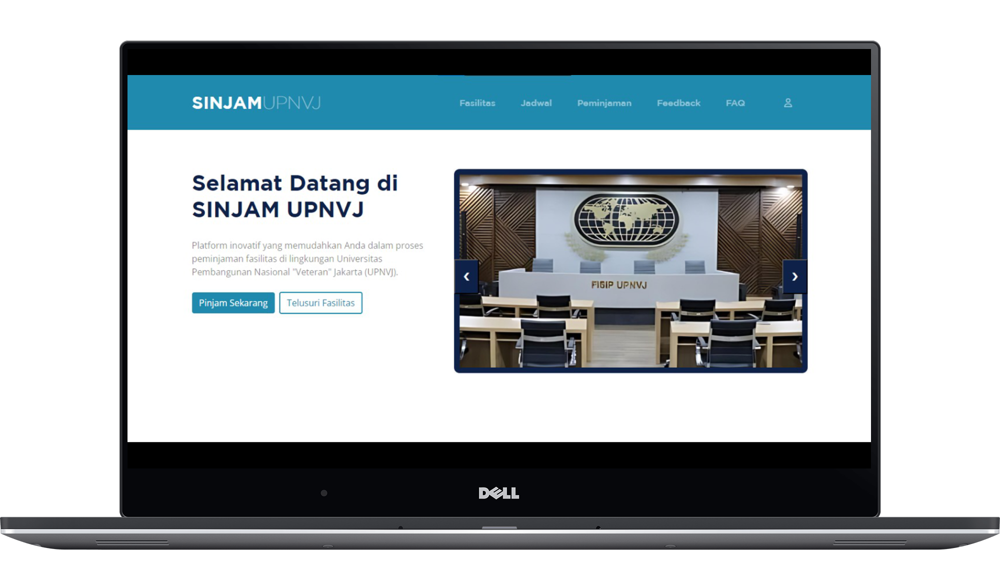
SINJAM (2024)
This group project was created as the final project for the Web Programming course. This website allows UPN 'Veteran' Jakarta students
to view various available facilities, submit facility loan requests online, monitor the status of their requests, and receive notifications about their
loan applications. The goal of this website is to streamline the facility loan process to prevent scheduling conflicts.
Role : Web Developer Tech Stack : VSCode, Github, HTML, CSS, JavaScript, PHP, MySQL
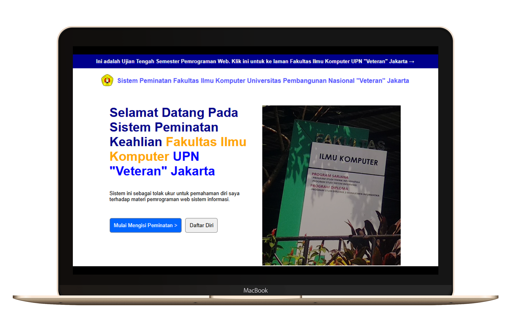
Sistem Peminatan Mahasiswa FIK (2024)
This project was created as a midterm exam for the Web Programming Practicum course. This website allows FIK UPN 'Veteran'
Jakarta students to select their specialization. Each department offers three specializations to choose from. The goal of this website is to assist the faculty in recording
the specializations chosen by the students. Role : Front-end Web Tech Stack : VSCode, HTML, CSS, JavaScript
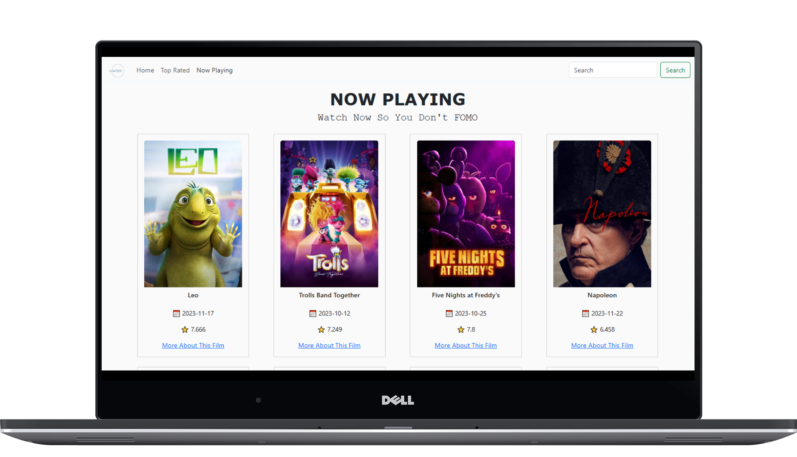
Movie Mingle (2023)
This project was created as the final project for the Web Beginner Study Club of KSM Android at UPN 'Veteran' Jakarta.
This website that provides information about films, such as titles, synopses, release dates, and ratings. The website was built using the React.js framework,
and the film data is sourced from the public API TMDB. My responsibility was to create a website that makes it easy for users to find detailed information about films.
Role : Front-end Web Tech Stack : VSCode, HTML, CSS, JavaScript, React.js